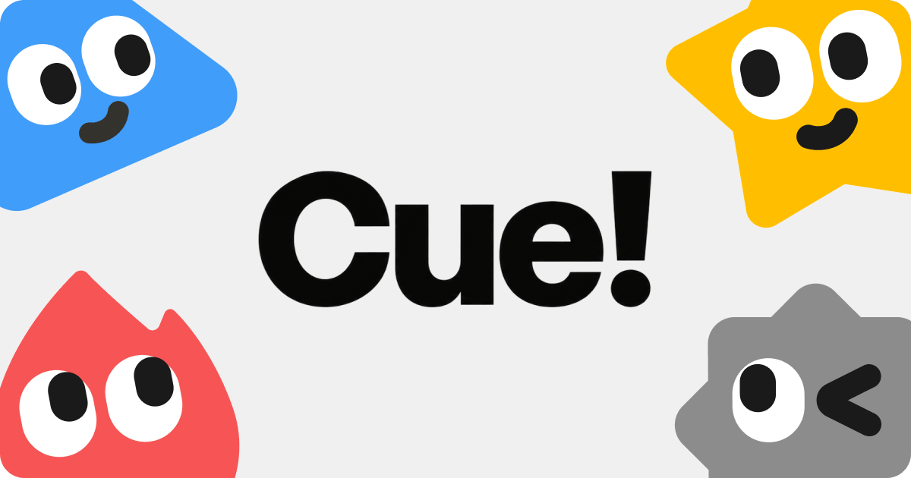

Threads｜Cue：讓個人 AI Agent 擁有電話、郵件、錢包與工作區

一句話摘要
Cue 的重要性不只在「會對話的 AI」，而是嘗試替 Agent 配上可執行真實任務的獨立身份與工作環境：電話、電子郵件、支付工具與專屬電腦。這讓多 Agent 分工更接近一個可管理的數位團隊，也同步提高權限、付款與人類覆核的重要性。
原貼文分享了什麼
作者以約一週的體驗，描述 Cue 可先建立不同角色的 Agent：例如讓「收發室 Agent」分流郵件，再將 GitHub 開發相關信件轉給 Coding Agent；收到 review 意見後，後續修改可以接續同一流程。
另外，貼文提出幾個生活情境：
- 掃描餐廳桌邊點餐 QR Code，與 Agent 討論菜單、挑選餐點並下單。
- 需要人接手時打開雲端電腦（VM）直接操作；平時則由 Agent 在工作區中處理。
- 可能取得電話號碼，讓 Agent 協助撥電話訂餐。
作者稱使用一週尚未付費，並提供 Cue 網站和推薦碼。這些是個人試用經驗，不應視為所有帳號、地區皆適用的方案規格或價格承諾。
官方頁面可確認的產品方向
Cue 官方網站以「你的專屬 Agent，隨時 Cue」定位產品，並明確展示每個 Agent 可配置自己的工具與權限，包括：
- 電話：可撥打、接聽與傳送訊息的能力類別。
- 錢包：在使用者控制的權限範圍內進行支付。
- 電腦：於專屬工作區使用所需應用程式與工具。
- 郵件：以自己的地址收發電子郵件。
- 群組聊天：讓多個 Agent 在同一場對話中協作。
- 掃碼建立：官方示例包含掃描店家 QR Code、建立 Agent 與預訂座位。
官方亦展示可連結 Trip.com、Oura、Gmail、MyFitnessPal 等服務來執行例行流程；實際可用連結器、地區與帳號資格仍需在產品內確認。
哪些地方要先保留判斷
以下內容目前只保留為貼文描述或需依帳號驗證的項目：
- 推薦碼 WW4KY 是否仍可用，以及試用資格、免費額度與結束條件。
- 電話號碼的可用國家、費率、撥號範圍與是否已開放。
- 餐廳 QR Code 工作流是否能在台灣或特定店家完成下單。
- 郵件分流、GitHub review 到 Coding Agent 修改的完整整合範圍。
尤其「錢包」與「電話」一旦觸及付款、訂金、取消政策或對外承諾，應保留使用者最終確認。
建議的安全試用方式
- 先從低風險任務開始：例如整理公開資訊、草擬郵件、分類非敏感收件匣。
- 分角色授權：讓每個 Agent 只取得完成工作所需的最低權限，不共用主帳號最高權限。
- 對外行動要設關卡：付款、下單、傳送外部訊息與不可逆操作，都應要求人工確認。
- 驗證可撤銷性：試用前先確認能否查看任務紀錄、停止 Agent、撤銷 connector 與移除付款／電話權限。
- 將「能展示」與「能穩定使用」分開：產品頁示範是方向；真正決策仍要以自己的帳號、地區、費用與失敗處理為準。
原始與查核連結
- Threads 原貼文：https://www.threads.com/@sstar.lung/post/DeOT8a3mQpM?xmt=AQG0PklBRdBwrg-CtQzXdI1hqdOcXY5FABcG1cyeWYvH75GqJlA9_UqMnuExLtjyoSCQkjnB&slof=1
- Cue 官方網站：https://cue.im
- 本文擷取紀錄：source-archive/2026-10-09-threads-sstar-lung-cue-personal-agents.json